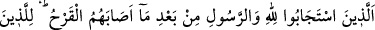
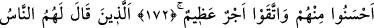
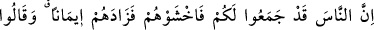
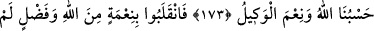
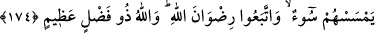
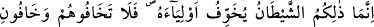
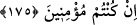

SAVAŞTA TEVEKKÜL
172. Yara aldıktan sonra yine Allah’ın ve Peygamber’in çağrısına uyanlar
(özellikle) bunların içlerinden iyilik yapanlar ve takvâ sahibi olanlar için pek büyük
bir mükâfat vardır.
173. Bir kısım insanlar, mü’minlere: “Düşmanlarınız olan insanlar, size karşı
asker topladılar; aman sakının onlardan!” dediklerinde bu, onların îmanlarını bir
kat daha arttırdı ve “Allah bize yeter. O ne güzel vekîldir!” dediler.
174. Bunun üzerine, kendilerine hiçbir fenâlık dokunmadan, Allah’ın nîmet ve
keremiyle geri geldiler. Böylece Allah’ın rızâsına uymuş oldular. Allah büyük
kerem sahibidir.
175. İşte o şeytan, ancak kendi dostlarını korkutur. Şu halde, eğer îman etmiş
kimseler iseniz onlardan korkmayın, benden korkun.
“O mü’minler” ki, Uhud gazvesinde “yaralandıkları halde,” yine Allah ve
Rasûlü’nün çağrısına uydular. “Çağrıma icâbet edin.” (el-Bakara, 2/186) kavl-i
şerîfinde olduğu gibi, kendilerine emredilip yasaklanan her konuda icâbet ve itâat
ettiler. Bütün emirleri yerine getirmeleri, güzel davranma kapsamına girer. Günahlardan
korunanlar kapsamına da bütün yasaklardan kaçınmak girer. Bunlara büyük ecir ve
sevap vardır. Âyetin diziliş biçiminden anlıyoruz ki; büyük ecir, “Allah ve Rasûlü’ne
icâbet eden” herkese verilecektir, sadece bir kısmına değil. Âyetteki (
) harf-i cerri;
kişilerin cinsini beyân etmek içindir. Buna göre âyetin mânası şöyle olur: Allah’a ve
Rasûlü’ne icâbet eden herkese büyük mükâfat vardır. Ancak, bu zatları kayıtlamak için
değil de, övmek ve bu büyük ecirlerinin güzel davranışları sâyesinde gerçekleştiğini
göstermek için, “güzel davranma” (ihsân) ve “günahlardan korunma” (takvâ)
vasıfları ile tavsîf edilmişlerdir.
Rivâyet edilir ki: Ebû Süfyân ve arkadaşları, Uhud’dan ayrılıp Mekke-Medîne